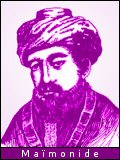
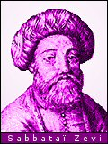

|
“Ne demande jamais ton chemin à quelqu'un qui le connaît, car tu ne pourrais pas t'égarer !”. Rabbi Nahman de Braslav |
Origines
Le mouvement de la Kabbale a des origines très anciennes. On trouve déjà une partie de ses éléments dans la littérature apocalyptique des IIe et Ier siècles avant J.-C. Les Esséniens ont parfois été considérés comme des précurseurs de la Kabbale. Le Sefer ha-Zohar, livre sacré des kabbalistes, prétend rapporter l'enseignement que Simon bar Yohaï dispensait à ses disciples au IIe siècle après J.-C. Le Sefer ha-Yetzirah, redécouvert au IXe siècle, fut écrit entre le IIIe et le VIe siècle ; il contient déjà les éléments d'une cosmogonie fondée sur les dix chiffres (les 10 Sefirot) et les 22 lettres de l'alphabet hébraïque, et propose le Grand Nom de Dieu comme objet suprême de la méditation.
Développement
À partir du XIIIe siècle, les kabbalistes apparaissent

comme un groupe mystique distinct, avec Abraham Aboulafia, représentant du kabbalisme extatique, qui puise son inspiration à la fois dans le Sefer ha-Yetzira et dans l'œuvre du philosophe juif Maïmonide (1135-1204), et surtout avec Moïse de León, qui, entre 1270 et 1280, écrit en araméen une série de traités dont l'ensemble constitue le Sefer ha-Zohar ou Livre de la Splendeur : l'importance de ce maître livre de la Kabbale fut telle que l'on a souvent confondu la doctrine tout entière avec cette œuvre particulière.En 1492, les Juifs sont chassés d'Espagne par Isabelle la Catholique, et un groupe de mystiques part s'établir à Safad, petite ville de Galilée où, pendant plus d'un siècle, les activités kabbalistes vont connaître une vie intense. Moïse Cordovero et surtout Isaac Louria transportent la Kabbale du cercle étroit des initiés jusque dans la conscience populaire. Leur doctrine est une tentative pour surmonter l'exil, en en aggravant les tourments, mais en exaltant l'espoir d'une rédemption. L'accent est mis sur le rôle véritable de la Loi : diriger l'effort intérieur de l'Homme

vers la restauration de l'harmonie universelle.Un siècle plus tard, la Kabbale aboutit à la doctrine hérétique de Sabbataï Zevi, qui se proclame Messie et suscite une immense espérance dans le monde juif. En 1666, il se convertit à l'islam, mais, en dépit de son apostasie et jusqu'à nos jours, il conserve des disciples qui croient voir personnifiée en lui la vieille conception du Messie torturé par les puissances du mal.
Le kabbalisme, bien que comptant encore quelques adeptes, a aujourd'hui cédé la place à une autre forme de mysticisme, le hassidisme (de hassid, «pieux»), rénové en Europe orientale vers le milieu du XVIIIe siècle, mais qui a hérité beaucoup d'éléments de l'ancienne mystique.
«pieux»), rénové en Europe orientale vers le milieu du XVIIIe siècle, mais qui a hérité beaucoup d'éléments de l'ancienne mystique.
La pensée kabbaliste, d'essence purement juive, a pénétré le monde chrétien. Les cathares ne l'ont sans doute pas ignorée. Raymond Lulle (1233-1315), Pic de La Mirandole (1463-1494), Reuchlin (1455-1522) et Paracelse (1493-1541) s'en sont inspirés, ainsi que de nombreux écrivains.